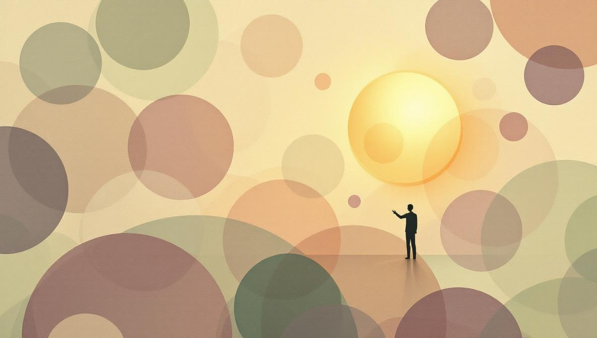
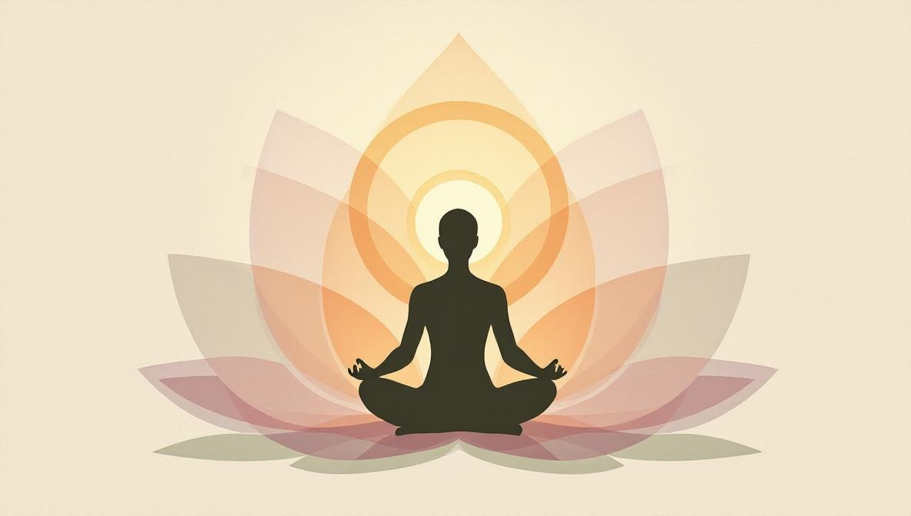

Cos'è la numerologia, esattamente?
La numerologia è un sistema simbolico che attribuisce significato ai numeri ricavati da nomi, date e altri dati personali. Le sue radici attraversano la filosofia pitagorica, la Qabbalah ebraica e le tradizioni egiziane e cinesi antiche — ognuna delle quali trattava i numeri come portatori di un significato qualitativo, non solo quantitativo.
Nella pratica moderna, la numerologia lavora più comunemente con la data di nascita per calcolare il Numero del Percorso di Vita — il numero più importante nel profilo numerologico. È considerato una costante: a differenza dei transiti planetari in astrologia, non cambia nel tempo. Riflette, in teoria, il tema dominante o l'energia della tua vita.
Una precisazione importante prima di proseguire: la numerologia non è una scienza. Non esistono prove peer-reviewed che il numero ricavato dalla tua data di nascita preveda tratti della personalità o esiti della vita. Quello che offre è una struttura per la riflessione su se stessi — una lente, non un verdetto.
Come calcolare il Numero del Percorso di Vita
Il metodo è semplice: somma tutte le cifre della tua data di nascita (giorno + mese + anno) e riduci il risultato a una singola cifra — a meno che tu non ottenga 11, 22 o 33, che sono numeri maestri e non si riducono ulteriormente.
Esempio: data di nascita 15/03/1990
Somma di tutte le cifre: 1+5+0+3+1+9+9+0 = 28
Riduci: 2+8 = 10, poi 1+0 = 1
Numero del Percorso di Vita: 1
Esempio con numero maestro: data di nascita 29/11/1984
Somma: 2+9+1+1+1+9+8+4 = 35
Riduci: 3+5 = 8
Numero del Percorso di Vita: 8
Esempio con numero maestro 11: data di nascita 11/02/1975
Somma: 1+1+0+2+1+9+7+5 = 26, riduci: 2+6 = 8
Nota: il controllo del numero maestro avviene anche nei passaggi intermedi. Se sommando giorno + mese ottieni 11, 22 o 33, conserva quel numero prima di sommare l'anno.

Il significato dei numeri dall'1 al 9
Ogni Numero del Percorso di Vita è associato a un tema centrale. Non sono profili di personalità fissi — sono tendenze, energie, aree in cui sfide e punti di forza tendono a concentrarsi per le persone con quel numero.
Vale la pena sottolineare che nessun numero è intrinsecamente migliore o peggiore degli altri. I numerologi spesso dicono che ogni numero porta in sé sia una forza che una sfida — l'energia pionieristica dell'1 può diventare rigidità; la sensibilità del 2 può diventare dipendenza eccessiva. Il numero non prevede quale lato incarnerai — nomina il territorio.
I numeri maestri: 11, 22, 33
I numeri maestri non vengono ridotti a una cifra singola perché si ritiene portino una vibrazione più forte — e più impegnativa. Sono relativamente rari nei profili numerologici e spesso descritti come portatori sia del potenziale del loro numero ridotto (2, 4, 6) che di uno strato superiore amplificato.
11 — L'Intuitivo
L'11 è associato a intuizione elevata, sensibilità spirituale e capacità di ispirare gli altri. La sfida: la stessa sensibilità che apre canali visionari può rendere la vita quotidiana opprimente. Le persone con un Percorso di Vita 11 spesso descrivono oscillazioni tra momenti di profonda intuizione e periodi di ansia o dubbio di sé.
22 — Il Grande Costruttore
Il 22 unisce la solidità pratica del 4 con una visione più ampia. È il numero associato alla costruzione di cose di importanza duratura — istituzioni, sistemi, movimenti. La sfida è il peso di quel potenziale: le persone con il 22 spesso sentono una profonda pressione per essere all'altezza di ciò che percepiscono di poter creare.
33 — Il Grande Maestro
Il più raro dei numeri maestri. Il 33 è associato al servizio disinteressato, alla guarigione e alla cura su larga scala. Come il 6 amplificato, indica chi è chiamato a prendersi cura degli altri o a insegnare — ma con un raggio d'azione maggiore e a volte con un sacrificio maggiore. In pratica, un vero Percorso di Vita 33 è raro perché il calcolo richiede una combinazione specifica di giorno, mese e anno per produrre questo numero prima di qualsiasi riduzione.

Oltre il Percorso di Vita: gli altri numeri del profilo
Il Numero del Percorso di Vita è solo un tassello di una lettura numerologica completa. Un profilo completo include anche:
- Numero dell'Espressione (o del Destino): ricavato dal nome completo alla nascita. Descrive i talenti e il modo in cui ti esprimi naturalmente.
- Numero del Desiderio dell'Anima (o del Cuore): calcolato dalle vocali del nome. Indica le motivazioni interiori — cosa vuoi a un livello profondo, indipendentemente da ciò che mostri al mondo.
- Numero dell'Anno Personale: cambia ogni anno. Calcolato dalla data di nascita + anno in corso. Usato per comprendere il tema generale di un ciclo di 12 mesi specifico.
- Numero della Personalità: derivato dalle consonanti del nome. Come gli altri ti percepiscono prima di conoscerti davvero.
Un numerologio professionista non ti fornisce semplicemente questi numeri — li legge insieme, cerca modelli e tensioni tra di essi e contestualizza il profilo all'interno di ciò che porti alla sessione. I numeri sono un punto di partenza per la conversazione, non una risposta finale.
Come usare il tuo numero senza dipenderne troppo
Il modo più utile di avvicinarsi a un numero numerologico è lo stesso con cui ci si avvicina a qualsiasi framework di personalità: come uno specchio, non una gabbia. Alcune osservazioni dai professionisti e dai clienti:
- Ciò che risuona è utile; ciò che non risuona, mettilo da parte. Se la descrizione del tuo numero sembra accurata, esplorala. Se alcune parti non si adattano, non si adattano — la descrizione non è l'autorità, sei tu.
- Usalo per notare, non per etichettare. 'Il mio numero è 7, quindi sono un introverso' è un'etichetta. 'Il mio numero è 7, e noto davvero che ho bisogno di molta solitudine per funzionare bene — interessante' è un'osservazione.
- La numerologia funziona meglio nel dialogo. L'uso più prezioso non è leggere una descrizione online ma discuterla con un professionista che fa domande — che usa il tuo numero come punto di partenza per capire cosa sta succedendo nella tua vita in questo momento.
Numerologia e altre pratiche olistiche
La numerologia è spesso usata accanto all'astrologia, all'Human Design e ai tarocchi — non come sistemi concorrenti ma come lenti sovrapposte. Una persona può avere un Percorso di Vita 8, ma il sole in Pesci e un tipo Projector in Human Design, e un professionista che lavora con più sistemi può identificare dove queste diverse mappe indicano lo stesso territorio.
Il filo conduttore in tutti questi sistemi è lo stesso: i dati della nascita — data, ora e luogo — usati in modo diverso. L'astrologia mappa le posizioni planetarie. Human Design utilizza sia l'astrologia che l'I Ching. La numerologia distilla data e nome in cifre singole. Ogni sistema offre un angolo diverso sulla stessa domanda: chi sei, e quali condizioni ti aiutano a funzionare al meglio?
Come si svolge concretamente una sessione numerologica
Prima della sessione, fornisci il tuo nome completo alla nascita e la tua data di nascita. Il professionista calcola i tuoi numeri principali — Percorso di Vita, Espressione, Desiderio dell'Anima e spesso l'Anno Personale — e prepara una lettura scritta o verbale.
Durante la sessione stessa — tipicamente 45-60 minuti online — il numerologio illustra il profilo, spiegando cosa suggerisce ogni numero e, soprattutto, chiedendo cosa risuona. Un buon professionista non recita un copione; usa i numeri come ancore per una conversazione su dove sei e cosa stai elaborando.
Esci con un riassunto scritto dei tuoi numeri e delle loro descrizioni. Quello che ci fai è una tua scelta.
Vuoi scoprire il tuo profilo numerologico?
Holistic Unity ti mette in contatto con numerologi verificati per sessioni online — in italiano, inglese o portoghese.
Trova un NumerologioFonti e riferimenti
- Enciclopedia Britannica — Numerologia: britannica.com/topic/numerology.
- Fondatrice della numerologia moderna: L. Dow Balliet (1847-1929), autrice statunitense che sviluppò il sistema pitagorico moderno lettera-numero.
- Tradizione pitagorica: l’assegnazione di valori numerici alle lettere risale a Pitagora di Samo (VI sec. a.C.) e alla sua scuola, che considerava i numeri il principio sottostante della realtà.
- Nota editoriale: la numerologia è un sistema interpretativo simbolico, non un metodo predittivo scientificamente validato. La trattiamo come strumento di auto-riflessione, non come guida per decisioni mediche, finanziarie o legali.
Domande frequenti
Come si calcola il numero numerologico dalla data di nascita?
Si sommano tutte le cifre della data di nascita (giorno, mese, anno) riducendo progressivamente fino a ottenere un numero a una cifra — a meno che non si arrivi a 11, 22 o 33, che sono numeri maestri e non si riducono. Esempio: 15/03/1990 → 1+5+0+3+1+9+9+0 = 28 → 2+8 = 10 → 1+0 = 1.
Cosa sono i numeri maestri in numerologia?
I numeri maestri sono 11, 22 e 33. A differenza degli altri numeri, non vengono ridotti a una singola cifra perché portano una vibrazione e un potenziale particolarmente elevati. L'11 è associato all'intuizione e alla coscienza spirituale, il 22 alla costruzione di grandi progetti, il 33 alla cura e all'insegnamento.
Il Numero del Percorso di Vita cambia nel tempo?
No. Il Numero del Percorso di Vita si calcola dalla data di nascita, che non cambia. È il numero più stabile e fondamentale nel profilo numerologico. Altri numeri nel profilo — come il Numero dell'Anno Personale — cambiano ogni anno.
Qual è la differenza tra numerologia e astrologia?
Entrambe usano la data di nascita come punto di partenza, ma con metodologie diverse. L'astrologia mappa la posizione dei pianeti al momento della nascita e interpreta pattern ciclici nel tempo. La numerologia riduce le date a cifre e studia la risonanza vibrazionale di quei numeri. Alcune persone le usano entrambe come strumenti complementari di auto-conoscenza.
La numerologia è una scienza o una credenza?
La numerologia non è una scienza in senso empirico — non esiste evidenza scientifica che i numeri derivati dalla data di nascita determinino la personalità o il destino. È una pratica simbolica con radici storiche nelle tradizioni pitagorica, cabalistica e altre. Il suo valore dipende da come la si usa: come filtro interpretativo, non come oracolo.
Posso avere una consulenza numerologica online?
Sì. Le consulenze numerologiche funzionano molto bene online: il professionista elabora il profilo prima della sessione e poi ti guida nell'interpretazione in videochiamata. Non richiede presenza fisica. Su Holistic Unity puoi trovare numerologi verificati per sessioni online.